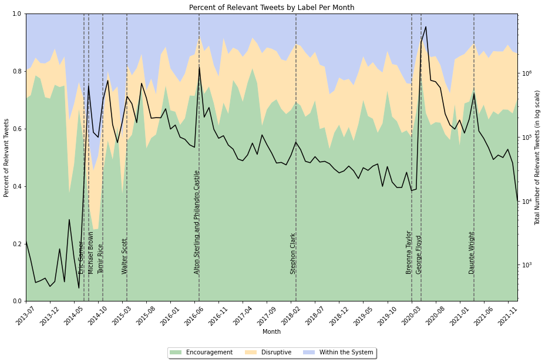
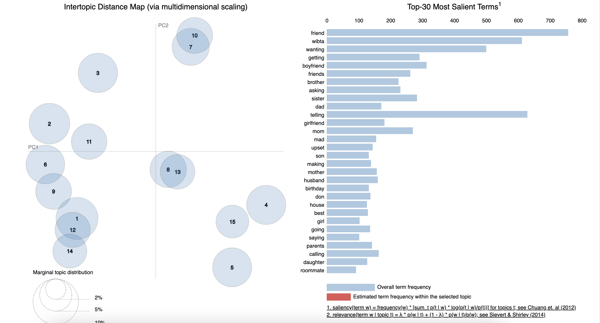
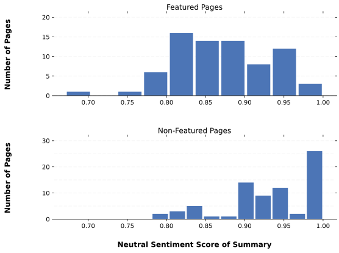
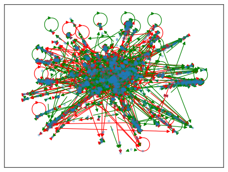

My Work
Insights into a New Social Movement: Utilizing Machine Learning to Classify and Analyze #BlackLivesMatter Twitter Advocacy
Fine-tuned Distilbert TensorFlow model to label the forms of advocacy contained in #BlackLivesMatter tweets. Examined model classifications of 21 million tweets to determine how the BLM movement relates to other social justice issues and Twitter user attributes using data visualizations.
- Transformers
- Natural Language Processing
- TensorFlow
- Machine Learning


The Characteristics of Advice-Seeking and Giving on Reddit
Through the classification and analysis of posts in the subreddit r/AmITheAsshole, this study aims to understand what topics people might want anonymous advice for and how an online forum style of advice-giving potentially changes the type of advice given.
- Reddit Data Mining
- Topic Modeling
- T-SNE Visualizations
- Sentiment Analysis
- Natural Language Processing

Wikipedia Neutrality
Aims to understand how well Wikipedia Featured Pages actually maintain neutrality.
- Wikipedia Data Mining
- Natural Language Processing
- T-Tests
- Sentiment Analysis

Reddit Community Sentiment Analysis
Analyzes the sentiment of comments in r/legaladvice and whether these sentiments are segmented by communities within the subreddit`s network.
- Reddit Data Mining
- Network Analysis
- Sentiment Analysis
- T-Tests

About Me
Currently recieiving my Master's in Social Data Science from the University of Oxford. I hold a BA in Data Science and Economics from Wellesley College. I am currently looking for Data Scientist positions in the United States. I have experience in machine learning, NLP, graph ML, and network analysis.
My Resume